📑 文章目录（14 节）
本文将配合谱面图与指法说明，详细讲解如何在段位认定模式中突破《冥（ANOTHER）》的通关技巧与练习曲。
SP 皆传的推荐选项是 1P 正谱、2P 镜像（MIRROR），因此本文也将以此选项为前提展开讲解。
- 序盘（19～50 小节）是 BPM200 乱打的纯地力对决。极易沾癖，切忌死磕粘着
- 最大的难点在于 51～65 小节从低速一路加速的纵连段。段位中掉血最猛的就是 51～62 小节的纵连，撑过这里就离合格一步之遥
- 纵连段用逆馅蜜（三连音 2 次＋八分音 4 次），结尾的皿复合用大拇指拍按（ベチャ押し）搭配 13 交互（57 交互）馅蜜就会轻松很多
- 平时提前用绿数字设为平时 2 倍的方式练习，适应低速段
《冥》曲目数据
| 曲师 | Amuro vs Killer |
|---|---|
| 初出版本 | beatmania IIDX 12 HAPPY SKY |
| BPM | 66～200 |
| SP ANOTHER | ☆12・2,000 Notes |
| BEGINNER | NORMAL | HYPER | ANOTHER | |
|---|---|---|---|---|
| SP | ☆3 302 | ☆5 555 | ☆10 1,111 | ☆12 2,000 |
| DP | － | ☆5 | ☆11 | ☆12 |
《冥》长期坐镇 SP 皆传的第 4 曲（最终曲）。截至 2026 年 11 月，街机（ZINRAI）的皆传课题曲为 Somnidiscotheque、灼熱Beach Side Bunny、卑弥呼、冥；INFINITAS 的皆传为 嘆きの樹、灼熱Beach Side Bunny、卑弥呼、冥——两边的压轴曲全都是《冥》。
这首曲子的标志性特征，就是序盘绵延不绝的 BPM200 16 分乱打，以及中后段 BPM 骤降一半后再逐步加速的纵连段。既然是段位最后一首歌，只要把血条保留到曲终就能合格。
谱面流程与掉血点
- 19～33 小节：BPM200 的 16 分乱打。非常容易沾癖
- 34～50 小节：乱打与楼梯。希望能在这里尽量回血
- 51～62 小节：先降速到 BPM100 再一路加速的纵连段。段位中最容易大量掉血的地方
- 63～65 小节：BPM190～200 的皿复合，紧接带折返的 32 分楼梯。不擅长皿复合的玩家在这里也会大量掉血
段位考证的关键在于纵连段能守住多少血量。部分玩家也会在紧随其后的 63～65 小节皿复合大幅失血。这两段的拆解打法都会在下方按 BPM 分段详细讲解。
虽然这首歌的变速跨度很大，但笔者打《冥》不做变速调速（Gear Change），而是从头到尾保持同一倍速，提前靠“绿数字 2 倍”练习来适应低速。如果想学习如何中途调速，可以参考下面这篇文章：
【打《冥》之前】最重要的就是绝对不要沾癖
《冥》会反复出现相似的乐句，在整个 IIDX 中都属于极易沾癖的谱面。在地力还没达标的时候反复去打，很容易让手指记住错误的按法。
只要序盘还会大掉血甚至直接暴毙，就应该远离《冥》1 个月以上，先靠其他曲目把地力练上去。关于冲击皆传的整体练习规划，可以参考这篇文章：
19～33 小节：BPM200 乱打与极易沾癖的配置
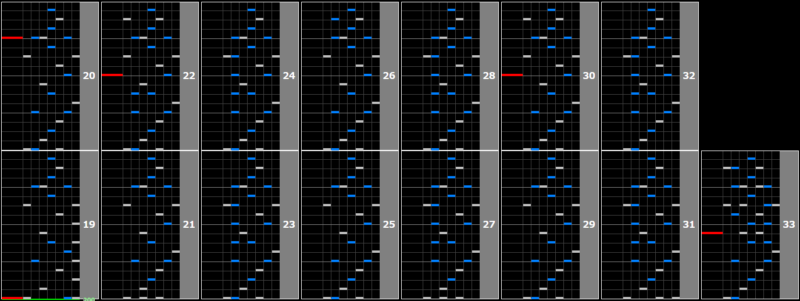
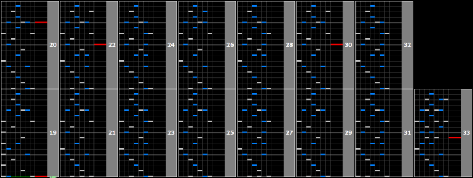
BPM200 的 16 分乱打毫无喘息地倾泻而下，是序盘的第一个难关，实在谈不上好按。其中还穿插着纵连与轴，加上相似乐句反复循环，特别容易练出坏癖。
其中最容易沾癖的，就是反复出现的下面这个配置：
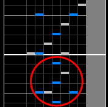
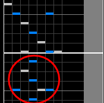
这一段的诀窍是用转盘侧的食指去按红圈里的 4 号键。光做到这一点，打起来就会轻松很多。
《冥》的序盘归根结底拼的是硬地力。如果已经沾癖，不妨试着换一下指法（运指）或按法。血条目标至少要做到微掉到持平。如果在这里就已经大掉血甚至血条见底，还是果断停打《冥》1 个月以上为好。
这一段的练习曲示例
建议挑一些接近 BPM200、包含乱打、轴和楼梯的曲目，在练习时有意识地压低 Miss 数。开 RANDOM（乱）当然很好，不擅长楼梯的玩家也可以先用正谱和镜像把这些曲子都过一遍。以下是参考曲目：
- A
- Bad Maniacs
- Chrono Diver -PENDULUMs-
- Close the World feat.a☆ru
- DARK LEGACY
- DOMINION
- Elemental Creation
- GAIA
- Immortal
- Little Star
- neu
- Nightmare before oversleep
- NNRT
- One More Lovely
- The Limbo
- TOXIC VIBRATION
- Verflucht
- X
- キャトられ♥恋はモ～モク
- 狂イ咲ケ焔ノ華
- 恋する☆宇宙戦争っ!!
- 少年A
- 旋律のドグマ～Misérables～
- †渚の小悪魔ラヴリィ～レイディオ†(IIDX EDIT)
34～50 小节：乱打与楼梯
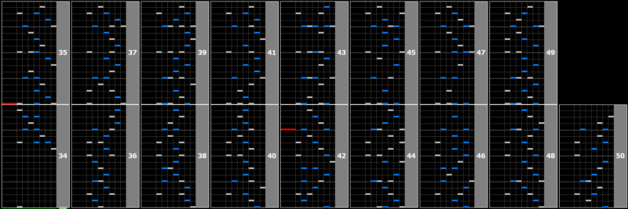
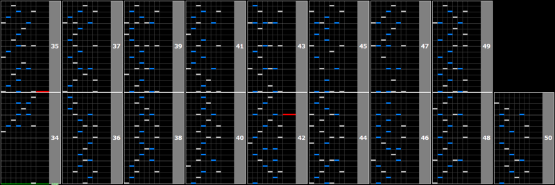
虽然依旧是几乎没有休息间隙的乱打与楼梯，但相比 19～33 小节，轴和循环配置变少了，打起来轻松一些。
如果连这一段都没办法回血，就说明纯粹是地力不足。请用上面 19～33 小节列出的练习曲继续夯实基本功。
51～65 小节：从低速一路加速的纵连段
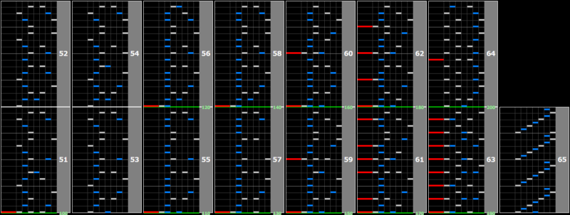
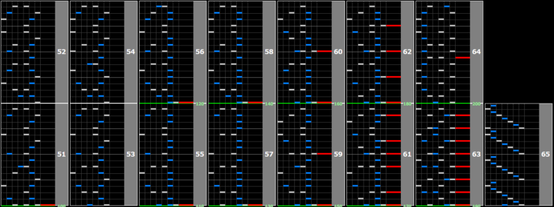
这就是《冥》最具代表性的持续变速（Soflan）发狂段。只要闯过这里，皆传就基本稳操胜券了。下面按 BPM 逐段拆解。
BPM100（51～54 小节）：适应低速
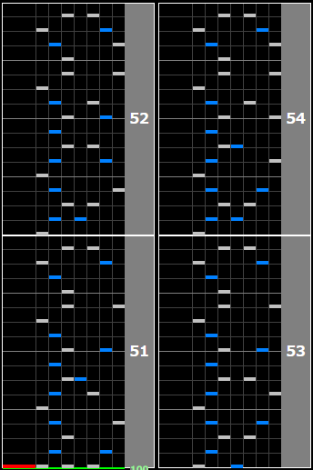
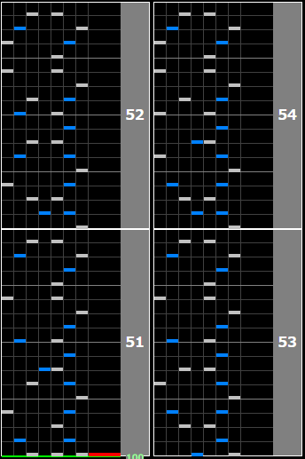
单看配置本身并不难，但 BPM 突然砍半会让谱面变得非常难看清。为了给后面的发狂攒血，这里要尽量减少 Miss，最好能尽量打出发光（P-GREAT）。
如果不擅长这里，就需要专门做低速适应训练。具体做法是把绿数字调成平时的 2 倍，用 RANDOM（乱）去打 BPM200 左右的曲目（例如：EDEN），效果非常好。
BPM110～130（55～57 小节）：不用馅蜜硬按纵连
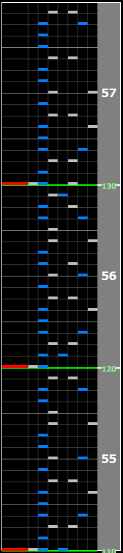
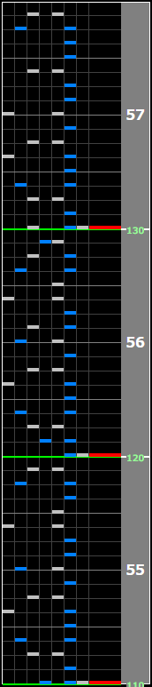
纵连段正式开始。只要不是低速，这种程度的纵连其实并不算太难。到 BPM130 左右为止，最好不要依赖馅蜜，直接靠硬按打下来。
这里同样重在熟悉低速读谱。非常推荐把绿数字设为平时的 2 倍，开 S-RANDOM（超乱）去打 BPM130 左右的曲子（例如：Harmony and Lovely）。
指法方面，可以按下面这样用另一只手帮忙分担，减轻打纵连那只手的负担，会轻松不少：
- 1P 侧用右手去按 3 号键
- 2P 侧用左手去按 5 号键
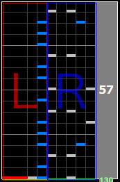
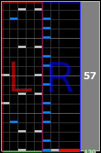
BPM140～180（58～62 小节）：用逆馅蜜攻克纵连
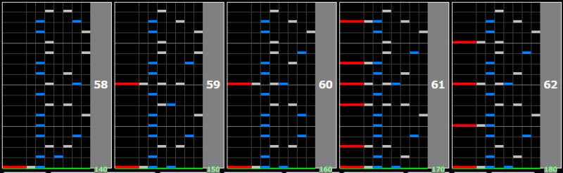
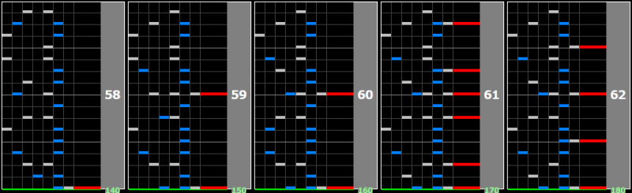
从这里开始，纵连逐渐快到跟不上，同时转盘（皿）也开始增多，难度陡增。这一段采用纵连逆馅蜜非常有效。
看谱面图就能发现，主纵连（1P 是 2 号键，2P 是 6 号键）的节奏从 BPM140 到 180 全程完全一致。如果只把主纵连单独抽出来，就是下面这个样子：
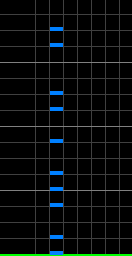
把它通过逆馅蜜简化之后，就变成了这样：
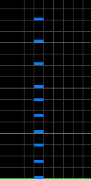
只要按出三连音 2 次，紧接八分音 4 次就能全连上。节奏感觉就像“哒哒哒哒哒哒哒 哒 哒 哒”。
《冥》的纵连段只要让身体记住这套逆馅蜜节奏，难度瞬间就能降低好几倍。哪怕以后冲 HARD 或 EX-HARD（EXH），这也是同样好用的技巧。平时多看谱面视频在脑海里模拟练习，把这个节奏刻进肌肉记忆里吧。
BPM190～200（63～65 小节）：大拇指拍按与 13 交互馅蜜
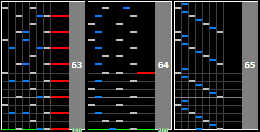
最后的关口是由超高难度皿复合、BPM200 乱打以及带折返的 32 分楼梯组成的连环攻势。
首先到了 63 小节（BPM190），请暂时忘掉前面纵连段推荐的跨手指法（1P 右手按 3 号键、2P 左手按 5 号键）。到了这种密度，哪怕是非常厉害的高手，也很难用 3:5 半固定漂漂亮亮地全打出来。
这里推荐改用手腕搓盘（手首皿）的完全固定，或者用大拇指进行拍按（ベチャ押し）。
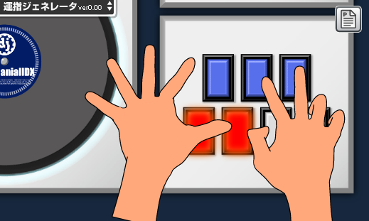

核心技巧在于，把 13 交互（2P 则是 57 交互）全部馅蜜掉。
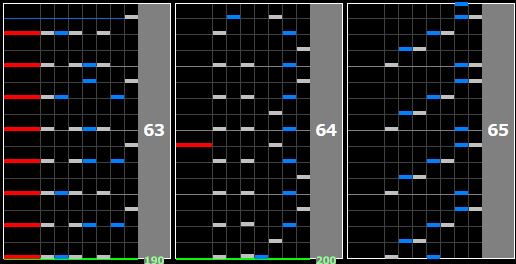
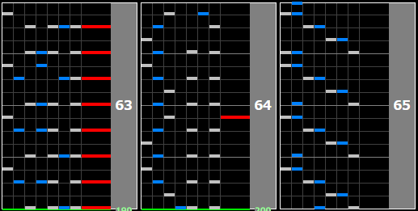
你不需要死记硬背整套馅蜜谱面。只要心里想着“把 13 交互（57 交互）全部当成 8 分双押来馅蜜”就够了。仅仅做到这一点，转盘就会好搓得多。64 小节（BPM200）也用同样的指法把 13 交互（57 交互）馅蜜过去即可。
至于结尾的 32 分楼梯段，随便糊过去就行。与其花精力专门针对这里，不如把心思放在其他段落上多攒点血。
这一段的练习曲示例（皿复合）
《冥》的皿复合段，关键在于完全固定或大拇指拍按。如果还不习惯拍按，无论选哪首歌，先固定指法从 ☆10～11 开始练起。以下是参考练习曲：
- Sun Field
- Bad Maniacs
- Confiserie
- EXUSIA
- G59
- MENDES
- mosaic
- one or eight
- PARADISE LOST
- reunion
常见问题
《冥》是哪个段位的课题曲？
是 SP 皆传的最后一首（第 4 曲）。截至 2026 年 11 月，无论街机（ZINRAI）还是 INFINITAS 的皆传，压轴曲都是《冥》。
《冥》的纵连按不过来，怎么办？
建议在 BPM130 左右之前，用另一只手帮忙分担按键，尽量不用馅蜜硬按下来；到了 BPM140～180 则改用“三连音 2 次＋八分音 4 次”的逆馅蜜。因为 BPM140～180 的主纵连节奏全程不变，只要记熟一次就会轻松好几倍。
《冥》的低速段看不清怎么办？
把绿数字调到平时的 2 倍，用 RANDOM（乱）去练 BPM200 左右的曲子，效果非常显著。总之多接触、适应低速最重要。
打《冥》需要变速调速（Gear Change）吗？
笔者本人不做 Gear Change，全程保持同一倍速打完。BPM100 的低速只要平时靠 2 倍绿数字练熟，就能稳稳应对。
《冥》应该反复多刷几次吗？
序盘非常容易沾癖，所以不建议死磕。如果序盘就会大幅掉血，先搁置 1 个月以上去其他曲子练高地力再回头打，反而是最快的捷径。
总结
想在段位认定中顺利突破《冥》，所需的能力与对应练法总结如下：
- 能接住 BPM200 乱打的地力 → 避免沾癖，靠其他曲目提升地力
- BPM130 左右为止的纵连能力 → 用 S-RANDOM（超乱）练习
- 低速读谱能力 → 用 2 倍绿数字练习
- BPM140 之后的发狂段 → 让身体熟记馅蜜与逆馅蜜的节奏
关于皆传其他课题曲的攻略以及备考皆传的练习安排，可以参考下面这些文章：
💬 读者评论与作者答疑（2 组对话）